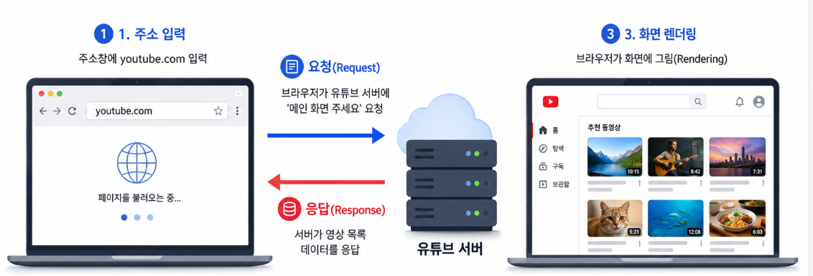
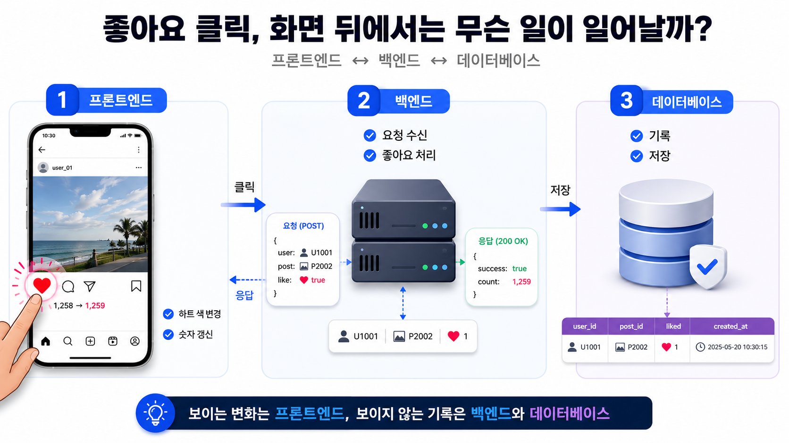
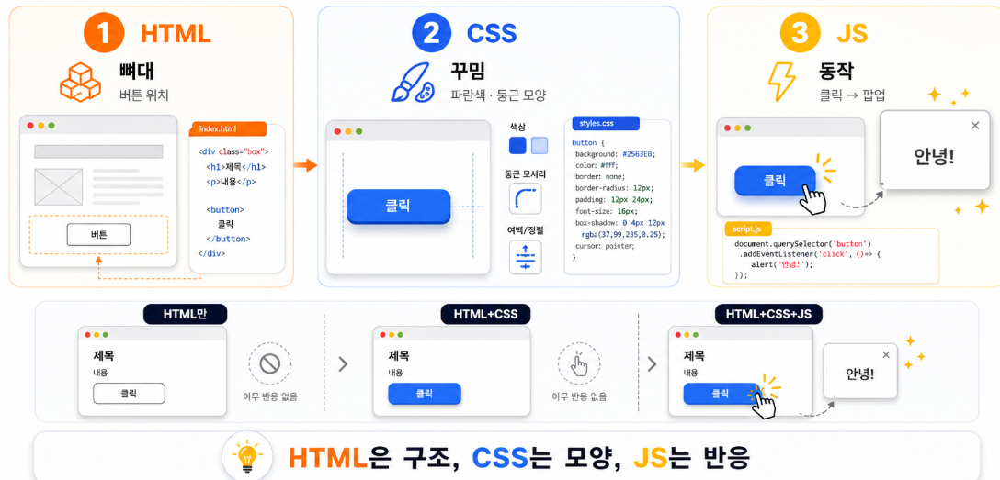
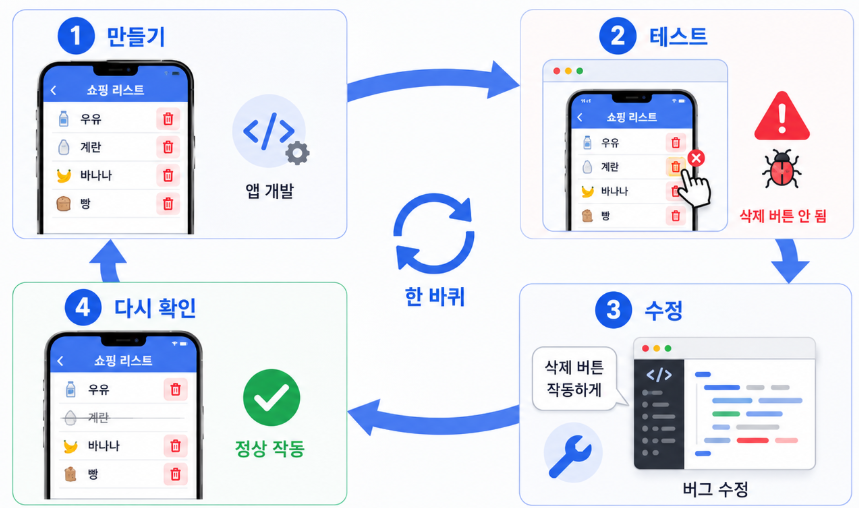
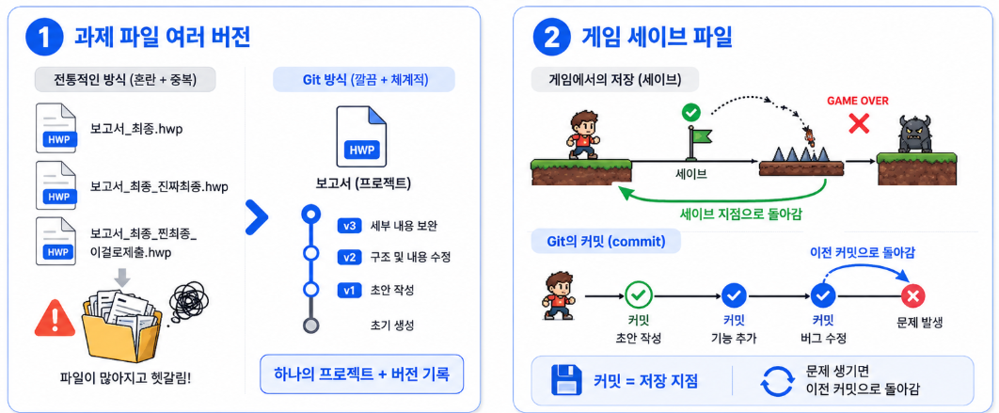
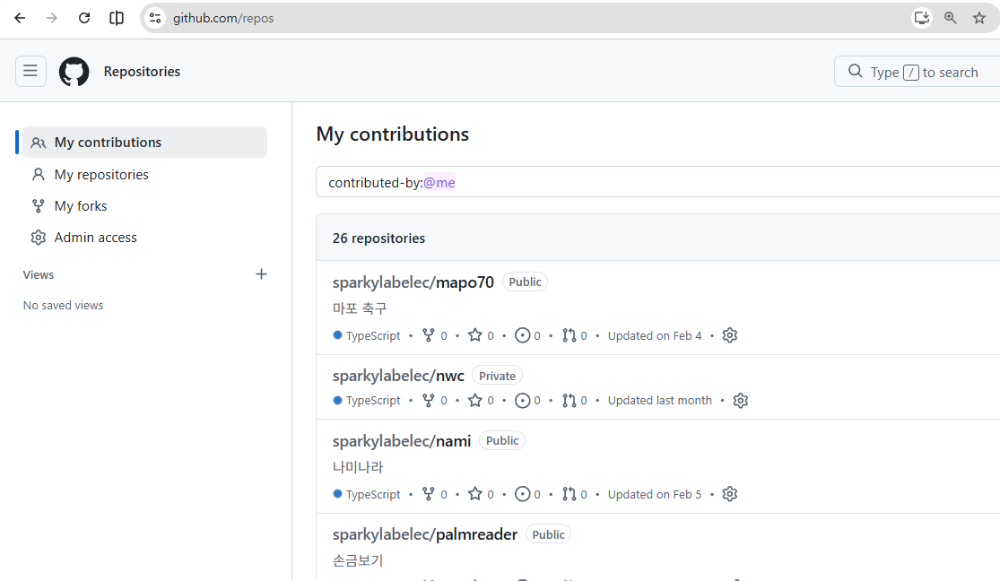
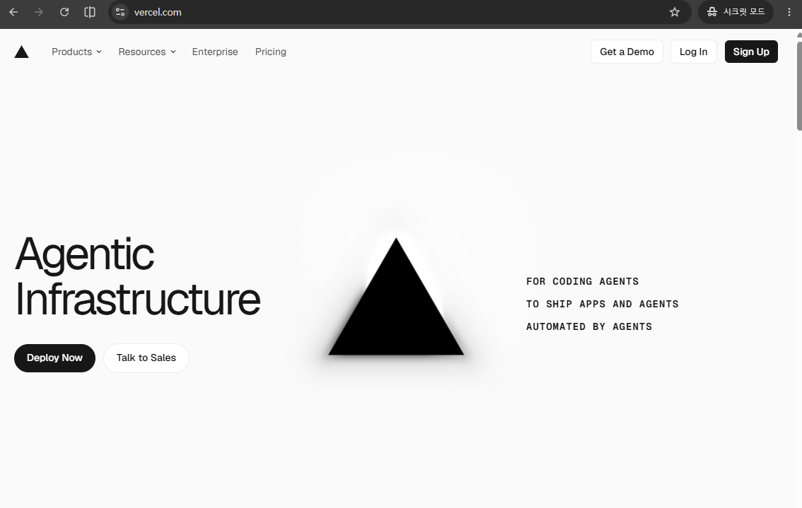
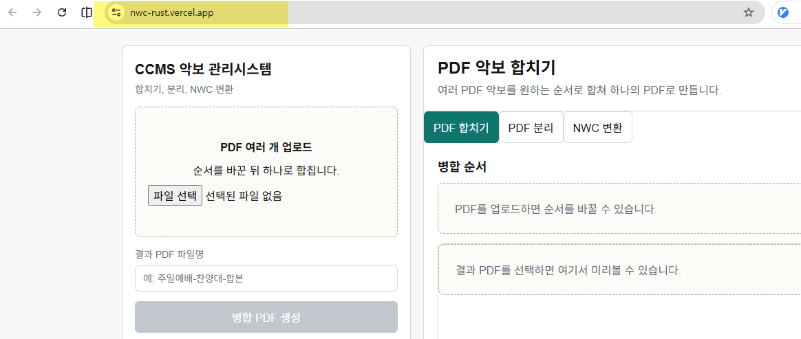

2 Web개발안내
Table of Contents
웹개발 안내
동작 원리: 브라우저와 서버
- 웹화면이 뜨기 까지
- 손님(나) = 브라우저: 크롬, 사파리처럼 웹을 보여주는 프로그램
- 주방 = 서버: 요청을 받아 화면 재료를 만들어 보내주는 멀리 있는 컴퓨터
- 주문서 = 요청(request): “이 페이지 보여줘”라고 보내는 신호
- 나온 음식 = 응답(response): 서버가 돌려주는 화면 데이터

Figure 1: 브라우저와서버
- 기초 용어
- 브라우저(browser)
- 웹 화면을 보여주는 프로그램 (크롬, 엣지, 사파리)
- 서버(server)
- 요청을 받아 화면·데이터를 보내주는, 24시간 켜진 컴퓨터
- 클라이언트(client)
- 요청을 보내는 쪽. 보통 우리 브라우저가 클라이언트다
- 요청/응답(request/response)
- “주세요”와 “여기요”의 한 쌍
- URL
- 웹 페이지의 주소 (예:
https://youtube.com)
프론트엔드와 백엔드
웹 서비스는 크게 “눈에 보이는 부분”과 “뒤에서 처리하는 부분”으로 구성
- 프론트엔드 = 홀: 손님이 직접 보고 만지는 곳 (메뉴판, 테이블, 인테리어)
- 백엔드 = 주방: 손님은 못 보지만 실제 요리와 계산이 일어나는 곳
- 데이터베이스 = 창고: 재료(회원 정보, 게시글 등)를 보관하는 곳

- 기초 용어
- 프론트엔드(front-end)
- 사용자가 보고 조작하는 화면 쪽
- 백엔드(back-end)
- 화면 뒤에서 계산·저장·처리를 담당하는 쪽
- 데이터베이스(database)
- 정보를 정리해서 보관하는 디지털 창고
HTML·CSS·JS 역할
- 프론트엔드 화면 하나는 최소 3가지 언어가 사용됨.
- HTML
- 화면의 뼈대·구조를 만드는 언어
- CSS
- 색·크기·배치 등 겉모습을 꾸미는 언어
- JavaScript
- 클릭·입력 같은 동작과 반응을 만드는 언어
- 태그(tag)
- HTML에서 요소를 표시하는 꼬리표 (예:
<button>버튼</button>) - 코드(code)
- 컴퓨터가 알아듣는 명령을 적은 글

Figure 2: 웹언어역할
개발 과정: 만들기 → 테스트 → 수정 사이클
- 앱은 한 번에 완성되지 않는다. 만들고, 확인하고, 고치는 과정을 여러 번 반복

- 기초 용어
- 개발(development)
- 앱·프로그램을 만드는 일 전체
- 테스트(test)
- 만든 것이 제대로 작동하는지 확인하는 일
- 버그(bug)
- 프로그램이 의도대로 작동하지 않는 오류
- 디버그(debug)
- 그 버그를 찾아 고치는 일
- 미리보기(preview)
- 배포 전에 결과를 임시로 확인하는 화면
git 맛보기: 저장과 되돌리기
- 한 번의 개발 진행으로 완성되지 않음
- 과거의 했던 걸로 쉽게 돌아가거나 여러 버전을 동시에 만들면서 테스트 할 수 있음.
- 이러한 여러 결과물을 체계적으로 관리 할 수 있음
Git이 필요한 순간
- git은 “작업한 순간순간을 저장해두는 기록 장치”

- 기초 용어
- git
- 작업 기록을 저장하고 되돌리게 해주는 버전 관리 도구
- 버전 관리(version control)
- 시간에 따른 변경 기록을 관리하는 일
- 커밋(commit)
- “지금 이 상태”를 저장하는 한 번의 기록(세이브 지점)
4.2 git과 GitHub
- 하나는 “기록하는 도구”(git), 하나는 “그 기록을 온라인에 올려두는 창고”(github)
- git = 내 책상 위 일기장: 내 컴퓨터 안에서 변경을 기록
- GitHub = 그 일기를 인터넷 사물함에 복사해두는 것: 온라인 백업 + 공유
- 컴퓨터가 고장 나도 GitHub에 올려뒀으면 코드 백업 됨.

Figure 3: github
- 기초 용어
- GitHub
- git으로 만든 기록을 온라인에 저장·공유하는 웹 서비스
- 저장소/레포(repository, repo)
- 한 프로젝트의 코드와 기록을 담아두는 공간
- 푸시(push)
- 내 컴퓨터의 기록을 GitHub로 올리는 것
- 백업(backup)
- 잃어버리지 않도록 복사본을 따로 저장해두는 것
배포 맛보기: 세상에 공개 (Vercel)
배포란 무엇인가
배포는 “내 컴퓨터 안에만 있던 앱을, 아무나 접속할 수 있는 인터넷 위로 올리는 일”이다.
- 배포 전: 친구에게 앱을 보여주려면 내 화면을 직접 보여줘야 한다
- 배포 후:
내앱이름.vercel.app같은 주소를 카톡으로 보내면, 친구가 자기 폰에서 바로 연다 - 기초 용어
- 배포(deploy)
- 만든 앱을 인터넷에 올려 누구나 쓸 수 있게 하는 것
- 호스팅(hosting)
- 앱을 항상 켜진 서버에 올려두고 접속을 받아주는 서비스
무료 배포 사이트 소개 (Vercel 등)
- 기존에는 배포하려면 서버를 직접 사고 복잡하게 설정해야 했음.
- 무료로,클릭 몇 번이면 된다. 대표적인 곳이 Vercel 이다.

- 대표 서비스
- Vercel
- 초보자에게 가장 쉬운 무료 배포 서비스
- Netlify
- Vercel과 비슷한 또 다른 무료 배포 서비스
- 기초 용어
- 호스팅 서비스(hosting service)
- 내 앱을 대신 올려주고 관리해주는 회사/사이트
GitHub 저장소를 Vercel에 연결하기
- 4장에서 앱을 GitHub에 올려둔 게 여기서 열쇠가 된다. Vercel은 그 GitHub
저장소를 가져가 자동으로 배포해준다.
- 흐름 (개념만)
- Vercel에 GitHub 계정으로 로그인 (두 서비스를 연동)
- 배포할 저장소(우리 앱)를 선택
- “Deploy” 버튼 클릭 → Vercel이 코드를 가져가 몇 분 만에 인터넷에 올림
- 쉬운 비유: 택배 자동 발송
- GitHub(창고)에 물건을 넣어두면, Vercel(택배사)이 알아서 포장해 세상으로 보낸다. 나중에 GitHub의 코드를 고치면 Vercel이 자동으로 다시 배포해주기도 한다.
- 기초 용어
- 연동(integration)
- 두 서비스를 서로 연결해 함께 쓰게 만드는 것
- 자동 배포(auto deploy)
- 코드를 고치면 별도 조작 없이 알아서 다시 배포되는 것
앱 주소(URL) 공유
- 배포가 끝나면 Vercel이 세상에 하나뿐인 인터넷 주소를 만들어준다.
- 이제 이주소가 곧 “내 앱”

Figure 4: 배포된 vercel
- 쉬운 예제
https://내앱이름.vercel.app같은 주소가 생긴다- 이 주소를 친구에게 보내면 친구 폰에서 바로 열린다
- QR 코드로 만들어 교실 화면에 띄우면 반 전체가 동시에 접속할 수도 있다
- 기초 용어
- URL
- 웹에서 특정 페이지를 가리키는 주소
- 도메인(domain)
- 주소에서
vercel.app처럼 서비스를 나타내는 이름 부분